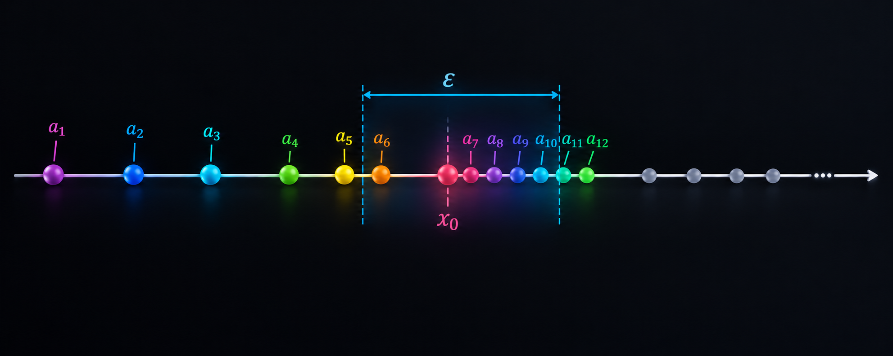
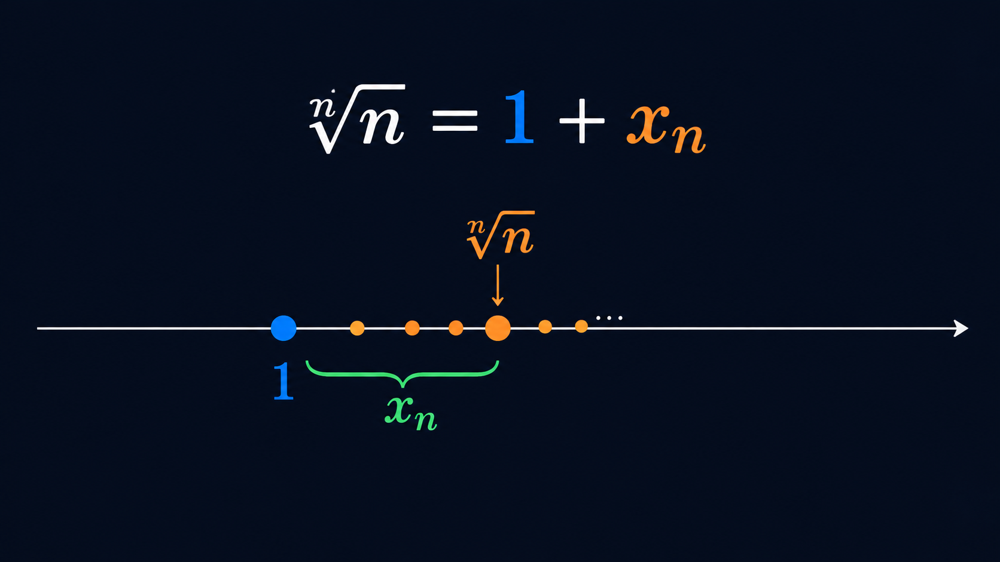
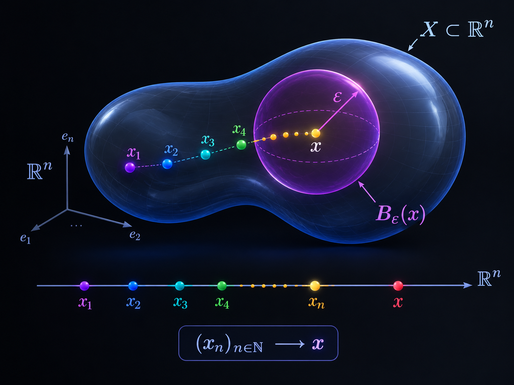
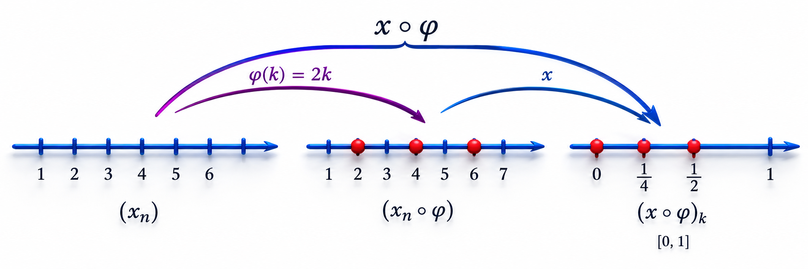
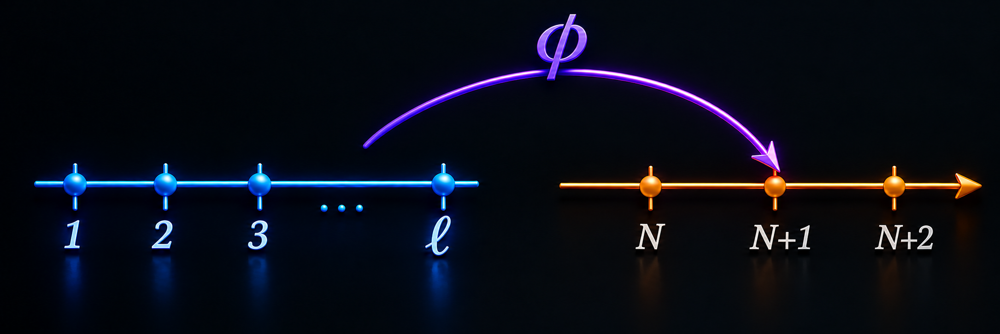

Sucesiones
Análisis Matemático — Capítulo 5
Una sucesión de números reales es simplemente una función $x\colon \mathbb{N} \longrightarrow \mathbb{R}$, pero en vez de usar una notación de función se usa la notación $(x_n)_{n=1}^\infty$, como si fuese un vector infinito (de ahí la notación $\mathbb{R}^{\mathbb{N}}$ para el conjunto de todas las sucesiones de números reales).
Ejemplos
Son sucesiones donde la diferencia de elementos consecutivos es siempre una constante (digamos $p$), es decir, $x_{n+1}-x_n=p$, para toda $n \geq 1$:
\[ x_1,\quad x_2=x_1+p,\quad x_3=x_1+2p,\quad\ldots,\quad x_n = x_1+(n-1)p. \]Son sucesiones para las cuales existe una constante $r\in\mathbb{R}$ tal que $x_{n+1}/x_n=r$ para toda $n \geq 1$:
\[ x_1,\quad x_2=x_1 r,\quad x_3=x_1 r^2,\quad\ldots,\quad x_n=x_1 r^{n-1}. \]Convergencia

Ya que el valor absoluto induce la distancia usual en los reales, podemos generalizar reemplazando $|x_n-x|$ por $d(x_n,x)$, donde $d$ es una métrica y los $x_n$, $x$ son puntos de un espacio métrico $(X,d)$.
Propiedades algebraicas de los límites en $\mathbb{R}$
Sean $(x_n)_{n=1}^{\infty}$, $(y_n)_{n=1}^{\infty}$ sucesiones convergentes de números reales. Entonces:
- Linealidad: para $\alpha\in\mathbb{R}$, \[\lim_{n\to\infty}(\alpha x_n + y_n) = \alpha\lim_{n\to\infty}x_n + \lim_{n\to\infty}y_n.\]
- Producto: \[\lim_{n\to\infty}(x_n y_n) = \lim_{n\to\infty}x_n\cdot\lim_{n\to\infty}y_n.\]
- Si $\lim_{n\to\infty}y_n\neq 0$: \[\lim_{n\to\infty}\!\left(\frac{x_n}{y_n}\right) = \frac{\displaystyle\lim_{n\to\infty}x_n} {\displaystyle\lim_{n\to\infty}y_n}.\]
- Si $m\leq x_n\leq M$ para todo $n\in\mathbb{N}$, entonces \[m\leq\lim_{n\to\infty}x_n\leq M.\]
- Ley del Sándwich. Si $x_n\leq z_n\leq y_n$ para todo $n$ y $(x_n),(y_n)\xrightarrow{n\to\infty}L$, entonces $z_n\xrightarrow{\;n\to\infty\;}L.$
Ejemplos de sucesiones convergentes
Sea $(x_n)_{n=1}^{\infty}$ monótona creciente y acotada superiormente ($x_n\leq M$). Entonces
\[\lim_{n\to\infty}x_n = \sup_{n\in\mathbb{N}}\{x_n\}.\]Demostración ▸ click para desplegar
Existencia del supremo. $A=\{x_n:n\in\mathbb{N}\}$ es no vacío y acotado por $M$. Por el axioma del supremo existe $L:=\sup A = \sup_{n\in\mathbb{N}}\{x_n\}.$
p.d. $\forall\,\varepsilon > 0\;\;\exists\,N\in\mathbb{N}$ tal que $\forall\,n\geq N\;\implies\;|x_n-L|<\varepsilon.$
Sea $\varepsilon > 0$. Como $L$ es cota superior: $x_n\leq L\implies x_n-L\leq 0.$
Como $L$ es la mínima cota superior, $L-\varepsilon$ no es cota superior, luego $\exists\,N$ tal que $L-\varepsilon < x_N.$ Por monotonía, $\forall\,n\geq N$:
\[L-\varepsilon < x_N \leq x_n.\] \[\begin{array}{rl} \implies & L-\varepsilon < x_n \leq L < L+\varepsilon, \\[4pt] \implies & -\varepsilon < x_n-L \leq 0 < \varepsilon, \\[4pt] \implies & |x_n-L| < \varepsilon. \end{array}\] \[\lim_{n\to\infty}x_n = L = \sup_{n\in\mathbb{N}}\{x_n\}.\quad\blacksquare\]Sea $(x_n)_{n=1}^{\infty}$ monótona decreciente y acotada inferiormente ($x_n\geq M$). Entonces
\[\lim_{n\to\infty}x_n = \inf_{n\in\mathbb{N}}\{x_n\}.\]Demostración ▸ click para desplegar
Existencia del ínfimo. $A=\{x_n:n\in\mathbb{N}\}$ es no vacío y acotado por $M$. Por el axioma del supremo existe $L:=\inf A = \inf_{n\in\mathbb{N}}\{x_n\}.$
p.d. $\forall\,\varepsilon>0\;\;\exists\,N\in\mathbb{N}$ tal que $\forall\,n\geq N\;\implies\;|x_n-L|<\varepsilon.$
Sea $\varepsilon>0$. Como $L$ es cota inferior: $L\leq x_n\implies 0\leq x_n-L.$
Como $L$ es la máxima cota inferior, $L+\varepsilon$ no es cota inferior, luego $\exists\,N$ tal que $x_N < L+\varepsilon.$ Por monotonía, $\forall\,n\geq N$:
\[x_n\leq x_N < L+\varepsilon.\] \[\begin{array}{rl} \implies & L-\varepsilon < L \leq x_n < L+\varepsilon, \\[4pt] \implies & -\varepsilon < 0 \leq x_n-L < \varepsilon, \\[4pt] \implies & |x_n-L| < \varepsilon. \end{array}\] \[\lim_{n\to\infty}x_n = L = \inf_{n\in\mathbb{N}}\{x_n\}.\quad\blacksquare\]Como $\sqrt[n]{n}\geq 1$ escribimos $\sqrt[n]{n}=1+x_n$ con $x_n\geq 0.$

p.d. $\lim_{n\to\infty}x_n=0$. Por el binomio de Newton:
\[\begin{aligned} n = (1+x_n)^n &= \sum_{k=0}^n \underbrace{\binom{n}{k}x_n^k}_{\geq\,0} \;\geq\; \binom{n}{2}x_n^2 = \frac{n(n-1)}{2}\,x_n^2, \\[8pt] \implies\quad 1 &\geq \frac{n-1}{2}\,x_n^2 \qquad\text{(dividiendo entre }n\text{)}, \\[6pt] \implies\quad 0 &\leq x_n \leq \sqrt{\tfrac{2}{n-1}},\quad n\geq 2. \end{aligned}\]Como $\sqrt{\tfrac{2}{n-1}}\to 0$, por la ley del sándwich $\lim x_n=0$. Por lo tanto:
\[\lim_{n\to\infty}\sqrt[n]{n}=\lim_{n\to\infty}(1+x_n)=1.\quad\blacksquare\]Sea $X\neq\emptyset$ un conjunto. Una sucesión en $X$ es una función
\[x\colon\;\mathbb{N}\longrightarrow X,\qquad n\longmapsto x_n.\]Se usa la notación $(x_n)_{n\in\mathbb{N}}$ ó $(x_n)_{n\geq 1}$.
Ejemplos
- En $\mathbb{R}^3$: \[x_n = \left(\cos(n\pi),\;\frac{1}{n^2},\;\sqrt[n]{2}\right),\quad n=1,2,\ldots\]
- En $\ell_\infty$: \[\begin{aligned} X &= \ell_\infty \\ &= \bigl\{(x_n)_{n=1}^\infty \;:\; x_n\in\mathbb{R},\; \sup_{n\in\mathbb{N}}|x_n| < +\infty\bigr\} \quad\text{(sucesiones acotadas).} \end{aligned}\]
- Vectores canónicos en $\ell_\infty$: \[\left.\begin{aligned} e_1 &= (1,0,0,\ldots)\\ e_2 &= (0,1,0,\ldots)\\ &\;\vdots\\ e_n &= (0,\ldots,\underbrace{1}_{\text{lugar }n},\ldots) \end{aligned}\right\} \quad\therefore\;(e_n)_{n=1}^\infty\text{ sucesión en }\ell_\infty.\]
- En $C([0,1])$: \[f_n(x) = \frac{x^n}{1+x^n},\quad n=1,2,\ldots\]
Sea $(X,d)$ un espacio métrico y $(x_n)_{n\in\mathbb{N}}$ una sucesión en $X$. Decimos que la sucesión es convergente en $X$ si existe $x\in X$ tal que
\[\forall\,\varepsilon > 0\;\;\exists\,N\in\mathbb{N}\;\text{ tal que }\; \forall\,n\geq N,\;\; d(x_n,x) < \varepsilon.\]Escribimos $\lim_{n\to\infty}x_n=x.$
Geométricamente, $\varepsilon$ es el radio de una bola y la métrica $d$ determina la forma de la vecindad centrada en $x$.

- La $N$ depende generalmente de $\varepsilon$; se puede denotar $N(\varepsilon)$.
- Se puede cambiar $d(x_n,x)<\varepsilon$ por $d(x_n,x)\leq\varepsilon$ (reemplazar $\varepsilon$ por $\varepsilon/2$).
- A partir de cierto instante $N$, la distancia al límite puede hacerse tan pequeña como se quiera.
- $\lim_{n\to\infty}x_n=x$ en $X$ $\;\Leftrightarrow\;$ $\lim_{n\to\infty}d(x_n,x)=0$ en $\mathbb{R}$.
Dado un espacio vectorial normado $(V,\|\cdot\|)$, la norma induce una métrica $d(v,w)=\|v-w\|$. La definición de $\lim_{n\to\infty}v_n=v$ se escribe:
\[\forall\,\varepsilon > 0\;\;\exists\,N\in\mathbb{N}\;\text{ tal que }\; \forall\,n\geq N\;\implies\;\|v_n-v\| < \varepsilon.\]Equivalentemente:
\[\Bigl(\lim_{n\to\infty}v_n=v\;\text{ en }V\Bigr) \;\Longleftrightarrow\; \Bigl(\lim_{n\to\infty}\|v_n-v\|=0\;\text{ en }\mathbb{R}\Bigr).\]- $\displaystyle\lim_{n\to\infty}x_n=x$ en $(X,d)$ $\;\iff\;$ $\bigl[\forall\,\varepsilon>0\;\exists\,N\;:\; n\geq N\implies d(x_n,x)<\varepsilon\bigr]$
- $\displaystyle\lim_{n\to\infty}v_n=v$ en $(V,\|\cdot\|)$ $\;\iff\;$ $\bigl[\forall\,\varepsilon>0\;\exists\,N\;:\; n\geq N\implies\|v_n-v\|<\varepsilon\bigr]$
$V=\mathbb{R}^2$ con la norma euclidiana. Sea $v_n=(a_n,b_n)$.
\[\begin{aligned} v_n &\;\longmapsto\; v=(a,b) \\[.7em] \sqrt{(a_n-a)^2+(b_n-b)^2} &\;\longmapsto\; 0. \end{aligned}\]Sea $(x_n)_{n=1}^{\infty}$ una sucesión en $X$. Una subsucesión de $(x_n)_{n=1}^\infty$ es una función de la forma $x\circ\varphi$, donde
\[\varphi\colon\;\mathbb{N}\longrightarrow\mathbb{N} \;\text{ es estrictamente creciente.}\]
Notación. Se escribe $\varphi(k)=n_k$ y la subsucesión se denota $(x_{n_k})_{k=1}^\infty$. Entonces $(x\circ\varphi)(k)=x_{n_k}.$
Ejemplos básicos
- $\varphi(k)=k$ produce la propia sucesión.
- $(x_{2k})_{k\in\mathbb{N}}$: índices pares, $\varphi(k)=2k$.
- $(x_{2k+1})_{k\in\mathbb{N}}$: índices impares, $\varphi(k)=2k+1$.
$x_n=\tfrac{1}{n}$, $\varphi(k)=2k$. Término general: $x_{2k}=\tfrac{1}{2k}$.
\[\begin{aligned} 1 &\;\overset{\varphi}{\longmapsto}\; 2 \;\overset{x}{\longmapsto}\; \tfrac{1}{2} \\[4pt] 2 &\;\overset{\varphi}{\longmapsto}\; 4 \;\overset{x}{\longmapsto}\; \tfrac{1}{4} \\[4pt] 3 &\;\overset{\varphi}{\longmapsto}\; 6 \;\overset{x}{\longmapsto}\; \tfrac{1}{6} \\[4pt] 4 &\;\overset{\varphi}{\longmapsto}\; 8 \;\overset{x}{\longmapsto}\; \tfrac{1}{8} \end{aligned}\] \[(x_{n_k})_{k=1}^{\infty} =\Bigl(\tfrac{1}{2},\tfrac{1}{4},\tfrac{1}{6},\tfrac{1}{8},\dots\Bigr).\]Si $\varphi,\psi\colon\mathbb{N}\to\mathbb{N}$ son estrictamente crecientes, entonces $\varphi\circ\psi$ también lo es y $(x_{(\varphi\circ\psi)(s)})_{s=1}^{\infty}$ es subsucesión de $(x_n)_{n=1}^{\infty}$.
Si $s < t$, entonces $\psi(s) < \psi(t)$ y, como $\varphi$ es creciente, $\varphi(\psi(s)) < \varphi(\psi(t)).$ En notación de funciones: $z=x\circ(\varphi\circ\psi).\;\blacksquare$
Sea $(X,d)$ espacio métrico, $(x_n)_{n\in\mathbb{N}}$ sucesión en $X$, $x\in X$.
\[\Bigl(\lim_{n\to\infty}x_n=x\Bigr) \;\Longrightarrow\; \Bigl(\lim_{k\to\infty}x_{n_k}=x\Bigr) \quad\forall\,(x_{n_k})\text{ subsucesión.}\]Demostración ▸ click para desplegar
Sea $(x_{n_k})$ subsucesión de $(x_n)$ y $\varepsilon>0$. p.d. $\exists\,k_0$ tal que $k\geq k_0\implies d(x_{n_k},x)<\varepsilon.$
Por hipótesis $\exists\,N$ tal que $n\geq N\implies d(x_n,x)<\varepsilon.$ Como $\varphi$ (con $\varphi(k)=n_k$) es creciente, $\exists\,\ell$ con $\varphi(\ell)>N$.

N" width="550">Sea $k_0=\min\{\ell:\varphi(\ell)>N\}$. Para $k\geq k_0$:
\[\begin{aligned} N &< \varphi(k_0) \leq \varphi(k) = n_k, \end{aligned}\] \[\implies d(x_{n_k},x) < \varepsilon.\quad\blacksquare\]Demostración (por contradicción) ▸ click para desplegar
Supongamos $x_n\not\to x$. Entonces $\exists\,\varepsilon>0$ tal que $\forall\,N\;\;\exists\,n\geq N$ con $d(x_n,x)\geq\varepsilon.$
Paso 1 — Índices malos
$A=\{n\in\mathbb{N}:d(x_n,x)\geq\varepsilon\}$ es infinito (si fuera finito, $N>\max A$ daría contradicción).
Paso 2 — Subsucesión alejada
Como $A\subseteq\mathbb{N}$ es infinito, podemos enumerarlo en orden creciente:
\[A = \{n_1 < n_2 < \cdots\}.\]Esto define una subsucesión $(x_{n_k})_{k\in\mathbb{N}}$ tal que $d(x_{n_k},x)\geq\varepsilon$ para todo $k\in\mathbb{N}.$
Paso 3 — Contradicción
Por hipótesis, a $(x_{n_k})_{k\in\mathbb{N}}$ se le puede extraer una subsucesión $(x_{n_{k_m}})_{m\in\mathbb{N}}\to x$, luego existe $M$ tal que $d(x_{n_{k_m}},x)<\varepsilon$ para todo $m\geq M$. Pero todos los términos de $(x_{n_k})$ cumplen $d(x_{n_k},x)\geq\varepsilon$, en particular los de la sub-subsucesión. Contradicción.
\[\therefore\quad x_n\longrightarrow x.\quad\blacksquare\]Sea $(x_n)_{n\in\mathbb{N}}$ acotada: $|x_n|\leq M\;\forall\,n$. Para cada $n$ definimos la cola
\[A_n = \{x_k : k\geq n\}.\]Las colas satisfacen $A_{n+1}\subseteq A_n$, son acotadas y no vacías.
Construcción de $\alpha_n$, $\beta_n$ y sus límites ▸ click para desplegar
Definimos:
\[\alpha_n:=\inf_{k\geq n}\{x_k\},\qquad \beta_n:=\sup_{k\geq n}\{x_k\}.\]Se tiene $-M\leq\alpha_n\leq\beta_n\leq M$, así que ambas sucesiones son acotadas. Además, como $A_{n+1}\subseteq A_n$:
\[\alpha_n\leq\alpha_{n+1} \quad(\text{creciente}),\qquad \beta_{n+1}\leq\beta_n \quad(\text{decreciente}).\]Por el teorema de convergencia monótona:
\[\begin{aligned} \lim_{n\to\infty}\alpha_n &= \sup_{n\geq 1}\Bigl\{\inf_{k\geq n}\{x_k\}\Bigr\}, \\[6pt] \lim_{n\to\infty}\beta_n &= \inf_{n\geq 1}\Bigl\{\sup_{k\geq n}\{x_k\}\Bigr\}. \end{aligned}\]Dada una sucesión acotada $(x_n)_{n\in\mathbb{N}}$:
\[\liminf_{n\to\infty}x_n = \sup_{n\geq 1}\Bigl\{\inf_{k\geq n}\{x_k\}\Bigr\},\] \[\limsup_{n\to\infty}x_n = \inf_{n\geq 1}\Bigl\{\sup_{k\geq n}\{x_k\}\Bigr\}.\]Para toda sucesión acotada: $\displaystyle\liminf_{n\to\infty}x_n\leq\limsup_{n\to\infty}x_n.$ (Ambos existen en $\mathbb{R}$ aunque la sucesión no converja.)
$\alpha_n\leq\beta_n$ para todo $n\implies$ $\lim\alpha_n\leq\lim\beta_n\implies$ $\liminf x_n\leq\limsup x_n.\;\blacksquare$
Ejemplo — $x_n=(-1)^n$
Límite inferior
\[\inf_{k\geq n}\{x_k\}=\inf\{-1,1\}=-1\quad\forall\,n.\] \[\implies\sup_{n\geq 1}\Bigl\{\inf_{k\geq n}\{x_k\}\Bigr\}=-1.\] \[\boxed{\liminf_{n\to\infty}x_n = -1}\]Límite superior
\[\sup_{k\geq n}\{x_k\}=\sup\{-1,1\}=1\quad\forall\,n.\] \[\implies\inf_{n\geq 1}\Bigl\{\sup_{k\geq n}\{x_k\}\Bigr\}=1.\] \[\boxed{\limsup_{n\to\infty}x_n = 1}\]Sea $(x_n)_{n=1}^{\infty}$ acotada. Entonces $(x_n)$ es convergente si y sólo si
\[\liminf_{n\to\infty}x_n = \limsup_{n\to\infty}x_n.\]En cuyo caso los tres valores coinciden.
Demostración ▸ click para desplegar
Recordamos que $\lim\alpha_n=\liminf x_n$ y $\lim\beta_n=\limsup x_n$.
$(\Rightarrow)$ Ida
Supongamos $x_n\to L$. Sea $\varepsilon>0$. Existe $N$ tal que $\forall\,n\geq N$:
\[|x_n-L| < \tfrac{\varepsilon}{2} \;\implies\; L-\tfrac{\varepsilon}{2} < x_n < L+\tfrac{\varepsilon}{2}.\quad(1)\]Sea $n\geq N$. Para todo $k\geq n\geq N$ se aplica (1):
\[L-\tfrac{\varepsilon}{2} \leq \alpha_n \leq \beta_n \leq L+\tfrac{\varepsilon}{2}.\] \[\implies |\alpha_n-L|<\varepsilon,\quad|\beta_n-L|<\varepsilon \quad\forall\,n\geq N.\] \[\therefore\;\lim\alpha_n=L=\lim\beta_n \;\implies\;\liminf x_n=L=\limsup x_n.\]$(\Leftarrow)$ Regreso
Supongamos $L:=\liminf x_n=\limsup x_n$. Entonces $\alpha_n\to L$ y $\beta_n\to L$. Para todo $n$: $\alpha_n\leq x_n\leq\beta_n.$ Por la ley del sándwich: $\lim x_n=L.$
\[\therefore\quad \liminf x_n = \limsup x_n = \lim x_n.\quad\blacksquare\]Sea $(X,d)$ espacio métrico y $A\subseteq X$. Se dice que $A$ es acotado si existen $r>0$ y $x_0\in X$ tales que $A\subseteq B_r(x_0)$, es decir, $d(x_0,a)\leq r$ para todo $a\in A$.
Sea $(X,d)$ espacio métrico. La sucesión $(x_n)_{n\in\mathbb{N}}$ se llama de Cauchy si
\[\lim_{n,m\to\infty}d(x_n,x_m)=0,\] \[\text{es decir:}\quad \forall\,\varepsilon>0\;\;\exists\,N\in\mathbb{N}\;\text{ tal que }\; \forall\,n,m\geq N\;\implies\;d(x_n,x_m)<\varepsilon.\]Sea $(X,d)$ espacio métrico y $(x_n)_{n\in\mathbb{N}}$ una sucesión de Cauchy en $X$. Si $(x_n)$ admite una subsucesión convergente en $X$, entonces $(x_n)$ es convergente.
Sea $(x_{n_k})$ la subsucesión con $\lim_{k\to\infty}x_{n_k}=x\in X.$ Sea $\varepsilon>0.$
Como $x_{n_k}\to x$: $\exists\,k_0$ tal que $k\geq k_0\implies d(x_{n_k},x)<\tfrac{\varepsilon}{2}.$
Como $(x_n)$ es Cauchy: $\exists\,N$ tal que $n,m>N\implies d(x_n,x_m)<\tfrac{\varepsilon}{2}.$
Sea $k_1=\max\{k_0,N+1\}$. Como $n_{k_1}>N$, para todo $n>N$:
\[\begin{aligned} d(x_n,x) &\leq d(x_n,x_{n_{k_1}}) + d(x_{n_{k_1}},x) \\[4pt] &< \tfrac{\varepsilon}{2} + \tfrac{\varepsilon}{2} = \varepsilon. \end{aligned}\] \[\therefore\quad x_n\to x.\quad\blacksquare\]